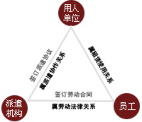

宜佳劳务派遣
- 业务介绍
- 解决方案
- 服务费用
- 服务方式
劳务派遣的概念：
劳务派遣作为一种新的用工方式，是指在劳务派遣机构与实际用人单位签订劳务派遣协议的前提下，由劳务派遣机构与派遣员工鉴订劳动合同，建立劳动关系后将派遣员工派往实际用人单位的有效的管理、督导和考核。

劳务派遣的性质：
人力资源派遣突破了企事业单位使用人力资源的传统模式，将人力资源的使用主体（或用人职能）和人力资源管理主体（或管人职能）适当分离。员工劳动关系与用 人单位相分离。所派遣的岗位多为用人单位的非核心岗位，目的是让用人单位能够集中有限的管理资源投入到更为重要的核心工作，管好核心员工，促进用人单位人 力资源管理职能的全面优化和升级。
劳务派遣的优势：
对用工单位而言
1、缓解用工单位用人风险。 采用人力资源派遣形式，被派遣人员的劳动关系建在派遣机构，用工单位与派遣人之间不存在直接的劳动关系，从而有效地缓解、减少了用工单位用人风险。
2、降低成本。采用人力资源派遣形式，被派遣人员的劳动关系建在派遣机构，派遣机构与用工单位共同管人，被派遣人员的招聘、劳动合同的签订、鉴证、社会保 险缴纳、劳动合同的解除等一系列各种具体琐碎事务由人力资源派遣机构办理，用人单位可以省去从事上述工作的人员，从而节约管理人工成本。
3、减少了用工单位事务性工作量。被派遣人员的一切具体事务，如工资的发放，社会保险费用的缴纳等等均由人力资源派遣机构办理，用工单位事务性工作量大为减少。从而使用工单位可以将有限的人力与主要精力集中于本企业的核心业务。提高企业的核心竞争力。
4、妥然处理劳动纠纷。由于被派遣人员的劳动关系建在派遣机构，用工单位与被派遣人员一旦出现纠纷时，由于用工单位与被派遣人员虽有使用关系，却没有劳动 关系，这样作为用工单位就避免了与被派遣人员的直接冲突，派遣机构可以从中协调，从而能妥然处理劳动纠纷。
5、能得到专业化服务。由于派遣机构专职从事人力资源管理及劳动保障工作，有一定的实践经验和业务能力，因此企业在碰到具体情况或不同需求，诸如政策的适用、劳动纠纷、及人力资源管理工作中问题时，能得到派遣机构的提供的专业服务 。
对劳动者而言
1、能更好地维护劳动者的合法权益。派遣人员的劳动关系在人力资源派遣机构，一旦用人单位出现违法、违规行为，人力资源派遣机构能按派遣协议规定出面交涉，维护劳动者合法权益。
2、再就业便捷。派遣人员劳动合同期满后，可进入人力资源派遣机构的信息库，派遣机构可以为劳动者提供方便、快捷和优质的职业介绍并优先获得推荐就业，重新选择更能发挥自身价值的工作岗位。
3、凭借人力资源派遣机构自身功能齐全的服务项目，如职业培训、职业介绍、政策咨询，可以帮助劳动者提高自身的就业质量。
1.员工招聘服务
1.提供面试服务
2.提供考试场所
3.帮助安排集体宿舍（费用自理）
4.协助实际用工单位做好面试、考试和体格检查等相关工作
2.派遣员工上岗前的基础教育服务
1.派遣员工工作守则
2.派遣员工须知
3.实际用工单位要求的内容
3.负责派遣员工的用工管理服务
1.外来人员就业证的办理
2.劳动合同签订
3.录用手续
4.退工手续
4.派遣员工档案管理服务
1.管理派遣员工相关的证件、证明及材料
2.负责档案资料的充实、归档
3.档案材料的转入、退出等传递工作
5.人事代理服务
1.人事关系转移
2.组织关系转移
3.户口挂靠
4.办理复职
5.专技人员职称初评、晋升、见习期合同鉴定及转正考核鉴定
6.办理特聘手续
6.派遣员工薪酬福利管理服务
1.派遣员工工资卡的制作
2.派遣员工工资计算
3.派遣员工工资发放
7.派遣员工社会保险管理服务
1.派遣员工社会保险关系的建立
2.个人社会保险帐户的转移
3.派遣员工社会保险的月度申报缴纳
8.个人所得税代理服务
1.派遣员工个人所得税的计算、代扣、代申报
9.综合服务
1.工伤、意外等突发事件的协调处理工作
2.劳务纠纷的协调处理工作
派遣员工的社会保险项目及比例按照《中华人民共和国劳动法》、《江苏省劳动合同条例》、《江苏省社会保险费征缴条例》等相关法律法规，用人单位必须为劳动者缴纳社会保险费。国家规定用 人单位为派遣员工按照以下的社保项目、缴纳比例（此标准为现行标准，国家会根据需要进行调整）进行申报和缴纳： 2009年9月1日开始交纳社会保险的缴费基数为1583元人民币。
| 项目 | 企业承担比例 | 个人承担比例 | 备注 | |
|---|---|---|---|---|
| 养老保险金 | 20% | 8% | 28% | |
| 项 | 失业保险金 | 2% | 1%(农民免) | 3% |
| 目 | 医疗保险金 | 8% | 2% | 11.20% |
| 保 | 补充医疗险金 | 1.20% | ||
| 险 | 工伤险金 | 0.60% | 1.50% | |
| 生育保险金 | 0.90% | |||
| 合计 | 32.70% | 11 | 43.70% |
根据派遣员工类别、数量多寡、服务内容的广度和深度等因素确定派遣服务费用
当派遣员工数量达到一定规模时，我们将派专人常驻贵公司，一方面负责与贵公司各相关部门的沟 通与交流，另一方面负责对派遣员工提供的各项服务。